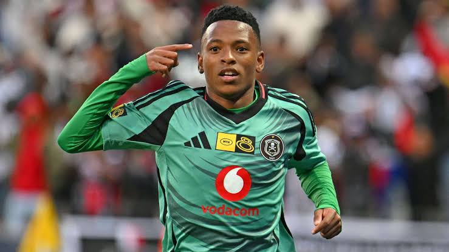

Tribute to Relebohile Mofokeng(President yama 2K)

Every time he steps onto the pitch, expectations soar, and fans anticipate his magic - which he often performs
- Born on October 23, 2004 in Sharpeville, South Africa
- Attended the SAFA-Transnet School of Excellence
- Orlando Pirates scouted Mofokeng before the 2022/23 season
- Made his first team debut for Orlando Pirates just months after appearing in the club's DStv Diski Challenge
- Plays for Orlando Pirates FC and South Africa
- Better known for 'Ukshaya ma grootmaan nge vala'
- Orlando Pirates fan's call him last born, some say He's Cocomelon, some say ke President yama 2K